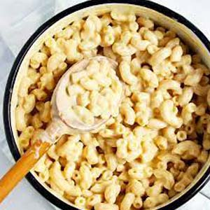
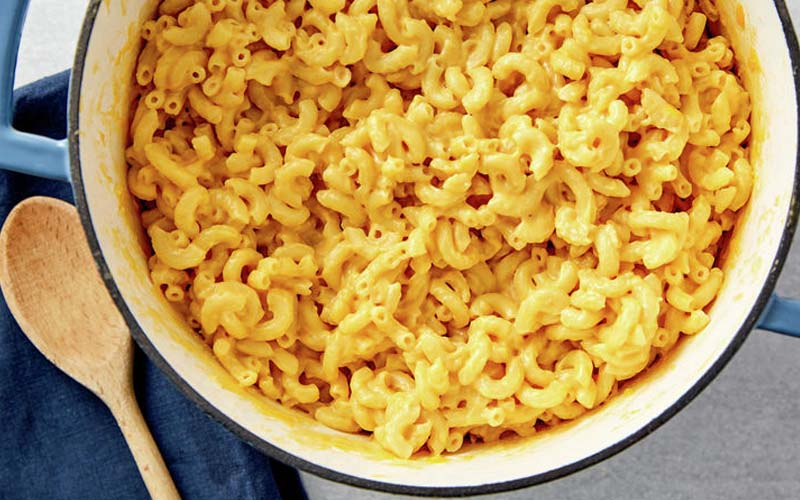

International Dishes Recipe 5:
Mac and Cheese
- Dish Description:
- Macaroni and cheese—also called mac 'n' cheese in the United States, and macaroni cheese in the United Kingdom is a dish of cooked macaroni pasta and a cheese sauce, most commonly cheddar. It can also incorporate other ingredients, such as breadcrumbs or meat. Traditional macaroni and cheese is a casserole baked in the oven; however, it may be prepared in a sauce pan on top of the stove or using a packaged mix. The cheese is often first incorporated into a Béchamel sauce to create a Mornay sauce, which is then added to the pasta. In the United States, it is considered a comfort food.

Ingredients:
- 8 ounces uncooked elbow macaroni
- 2 cups shredded sharp Cheddar cheese
- 1/2 cup grated Parmesan cheese
- 3 cups milk
- 1/4 cup butter
- 2 1/2 tablespoons all-purpose flour
- 2 tablespoons butter
- 1/2 cup bread crumbs
- 1 pinch paprika
Directions:
- Cook macaroni according to the package directions. Drain.
- In a saucepan, melt butter or margarine over medium heat. Stir in enough flour to make a roux.
- Add milk to roux slowly, stirring constantly. Stir in cheeses, and cook over low heat until cheese is melted and the sauce is a little thick.
- Put macaroni in large casserole dish, and pour sauce over macaroni. Stir well.
- Melt butter or margarine in a skillet over medium heat. Add breadcrumbs and brown. Spread over the macaroni and cheese to cover. Sprinkle with a little paprika.